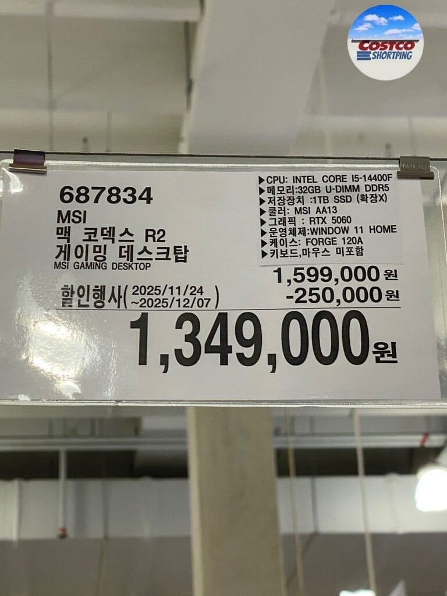
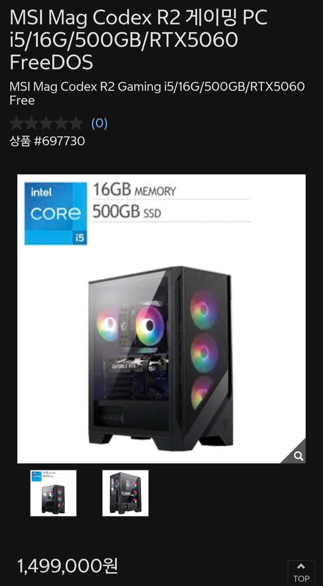
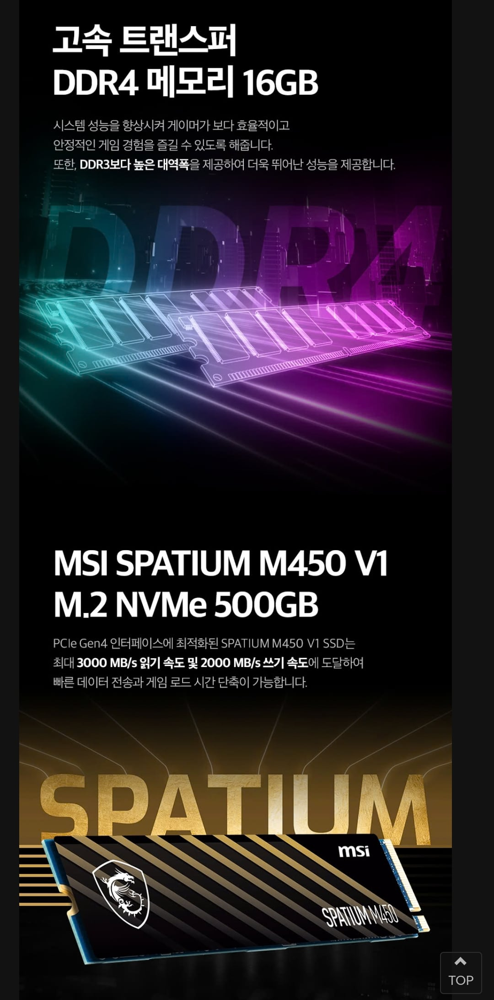
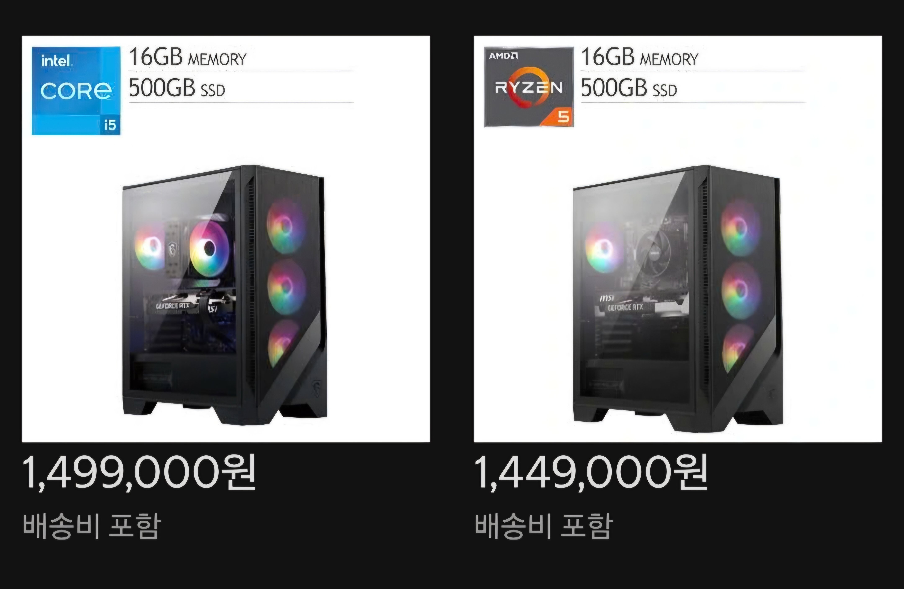
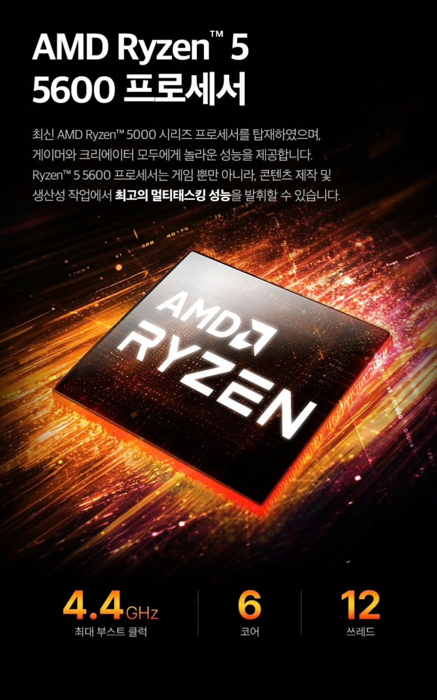
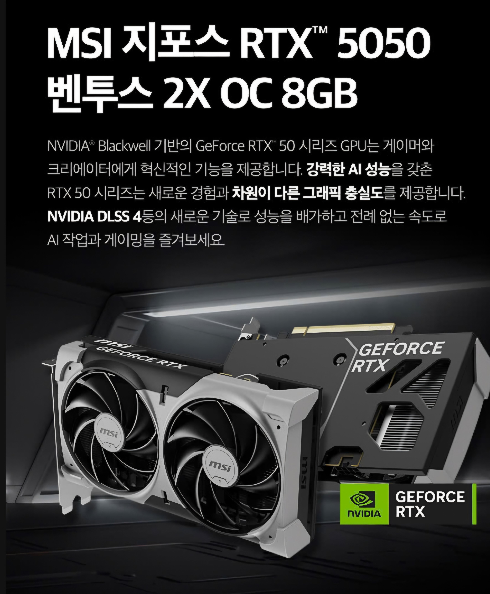

작년 연말 저세상 가성비라던 코스트코본체
14400f ddr5 32기가 5060 1tb nvme(msi m560 pcie5.0) 사양
윈11포함
현재 코스트코 코덱스R2는?

일단 10만원 비싸짐
Cpu는 i5 14400f로 동일한데 램이랑 nvme가 16긱 500긱으로 너프
하지만 진짜 함정은

램 DDR4 16긱으로 너프
NVME도 pcie4.0으로 너프
윈11없고 프리도스 모델로 떡락함

Z2라고 AMD 라이젠 제품도있긴한데
일단 윈도우11정품이 설치되어있음. 대신

라이젠 5600 들어가있고

글카가 RTX5050들어감...
그리고 5600인거 보고 알아챈 컴붕이도있겠지만
저것도 DDR4 모델임 ㅋㅋㅋ
5만원 싸고 윈11정품 포함 이긴한데 5050 쉽지않다
한줄요약 : 코스트코 본체가 혜자 인거는 이제 물건너 미국 코코한정임. 저건 한놈걸려라 에디션이야...
컴알못인데 같은 가격으로 저거보다 나은 조합 할수있음?